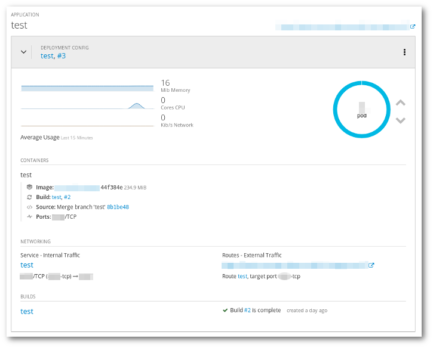
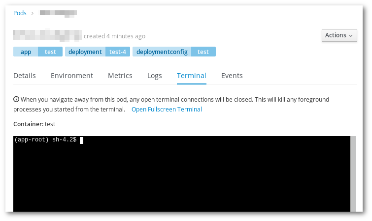

Pre-requisites, the application created in Exercise 2
In this exercise we will use the web interface to explore the application created in the previous step and get some data about it.
Check the overview page in the web interface.
Try to see the logs of the build, and check what was done. Which python packages were installed?

ps xcat /etc/os-release